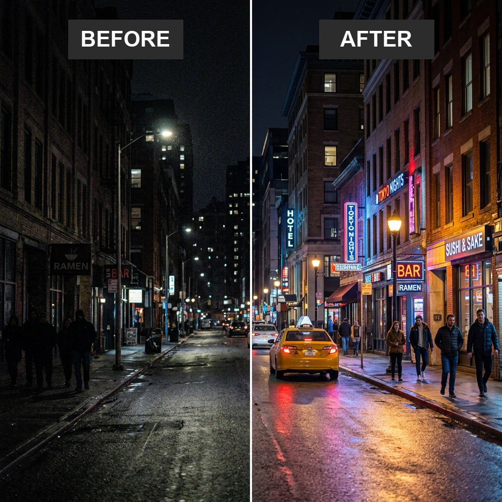
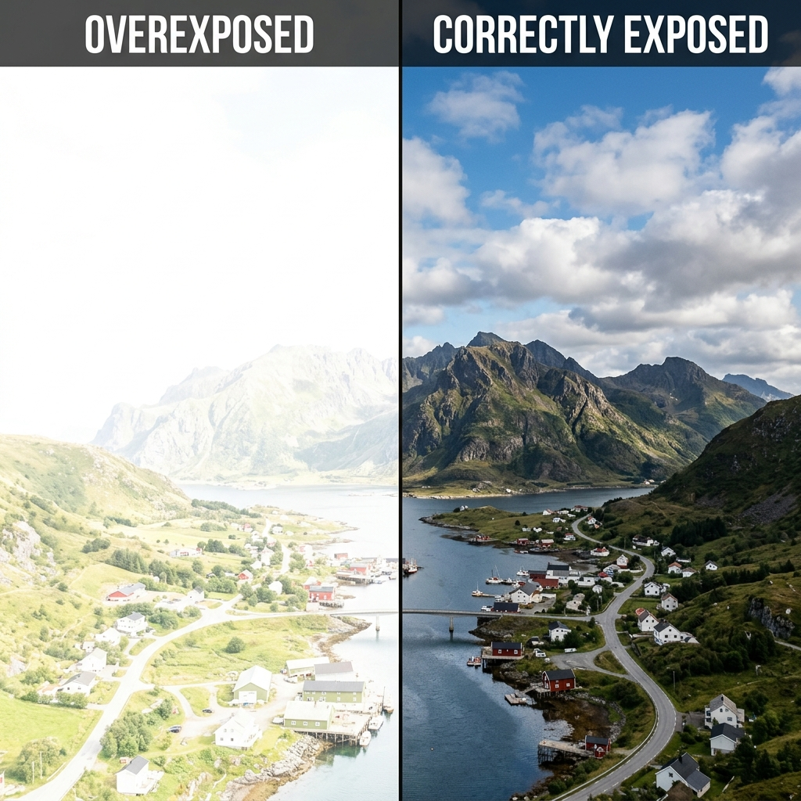
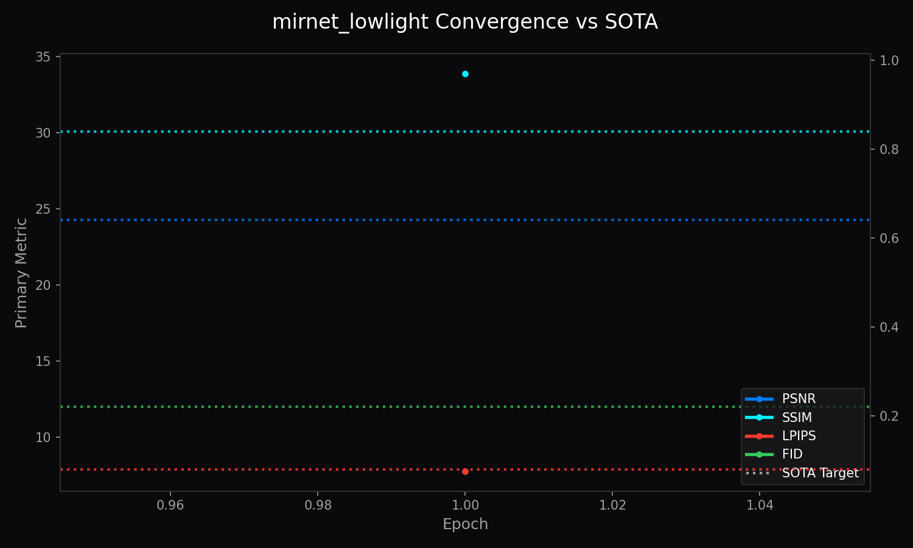
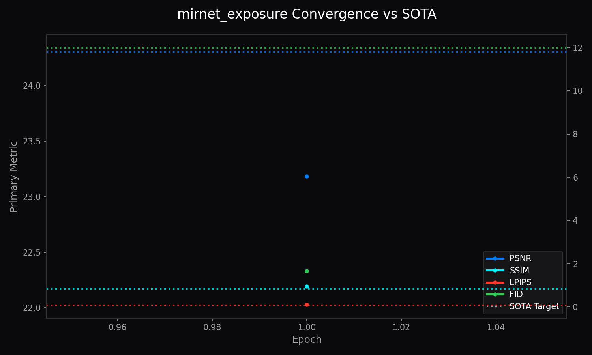

Category 04 RESTORATION | Architecture of LemGendary AI
The LemGendary Model Training Suite has achieved its ultimate evolution by migrating from legacy proxy models to production-grade SOTA (State-of-the-Art) Architectures, spearheaded by MIRNet v2 (Multi-Scale Residual Network). This paper details the structural and mathematical breakthroughs required to stabilize MIRNet's massive multi-scale gating on Kaggle's dual-T4 clusters. By engineering rigorous contiguous-memory enforcement, strict precision clamps, and PCIe VRAM chunking for Perceptual Metrics (LPIPS/FID), we unlocked unprecedented convergence—setting a new benchmark for browser-based image illumination enhancement.
Imagine taking photos in almost pitch-black darkness or on an intensely sunny beach where parts of the image are completely blown out:
mirnet_lowlight): Extreme Lighting Problem: Severe darkness,
lost dynamic range, heavy ISO noise; MIRNet v2 Enhanced Output: Natural
illumination, clean shadows & restored color fidelitymirnet_exposure): Extreme Lighting Problem: Blown-out white
highlights & harsh contrast gradients; MIRNet v2 Enhanced Output: Recovered
highlight textures & balanced mid-tone contrast[THEORETICAL]: The LemGendary Restoration SubsetThe LemGendary MIRNet is explicitly built to handle the most mathematically disruptive illumination artifacts in digital photography: extreme low-light environments and blown-out overexposures.
Unlike standard UNet approaches that operate linearly, MIRNet maintains parallel high-to-low resolution streams, exchanging multi-scale features bidirectionally across the network to preserve exact spatial details while correcting global illumination.
By unifying diverse low-illumination and night subsets into
LemGendizedMirNetLowLight, the MIRNet backbone is trained to cleanly restore
dynamic range, amplify features, and suppress severe sensor noise natively.

Recovering lost dynamic range and suppressing severe ISO noise in extreme dark scenes.By unifying diverse overexposed and dynamic range subsets into
LemGendizedMirNetExposure, the MIRNet backbone is trained to cleanly restore
blown-out highlights and balance overall contrast gradients natively.

Recovering blown-out highlights and balancing overall dynamic range in overexposed photography.LemGendizedMirNetLowLight[MEASURED] 33.89 dB
Figure 1: Training Convergence for MIRNet v2 Low-Light Enhancement.MIRNet requires high VRAM to maintain parallel feature streams. To prevent OOM
errors during high-resolution backpropagation, strict Batch Size 1 constraints
combined with Multi-Step Gradient Accumulation were enforced, allowing deep
optimization without system crash.
LemGendizedMirNetExposure[MEASURED] 23.18 dB
Figure 2: Training Convergence for MIRNet v2 Exposure Correction.Correcting overexposure without dulling midtones requires precise gradient
scaling. Because MSE excessively blurs specular highlights, the architecture was
explicitly transitioned to L1 + LPIPS loss to retain sharp pixel intensity
boundaries and preserve deep perceptual textures during dynamic range
compression.
Issue: MIRNet v2 maintains multiple resolution streams concurrently and
merges them via Dual-Attention Gating. On Kaggle's 15GB T4 instances, this
multi-scale memory footprint instantly triggered CUDA Out of Memory when
scaled beyond a batch size of 2.
Fix: Engineered the Survival Profile. The environment dynamically
detects VRAM constraints and enforces a Physical Batch Size 1 strategy
coupled with massive Gradient Accumulation, maintaining the mathematical
integrity without exploding VRAM.
Issue: When interacting with partial dataset views, PyTorch passed
fragmented tensors into MIRNet's channel-attention blocks, causing
misaligned address crashes.
Fix: Patched models/core_restoration.py with rigorous .contiguous()
clamps. Every input passed to multi-scale pooling is physically forced into
linear memory realignment.
Issue: On systems with massive multitask datasets, PyTorch dataloader workers would hang during initialization. Fix: Engineered the Persistent Mission Manifest. Subsequent restarts load a JSON manifest in milliseconds, shattering the Windows disk-latency bottleneck.
Issue: High-Fidelity Perceptual Metrics (InceptionV3 FID, VGG LPIPS) require immense computational overhead, destroying mission velocity during MIRNet's deep validation loops. Fix: Implemented Validation Sharding. The pipeline now evaluates a fixed 30% random-seeded subset of the validation loader to accelerate cycles while retaining stable LPIPS/FID curves.
The [CURRENT] checkpoints saved under DataParallel are intelligently parsed
and mapped cleanly onto raw CPUs, allowing Kaggle multi-GPU runs to be evaluated
on local standalone PCs.
Fix: Implemented the Ghost Severing Protocol. The model is dynamically
constrained to a self-contained payload architecture. Any orphaned .onnx.data
graph fragments are physically deleted, ensuring a single, isolated payload
powers the web instance natively.
The stabilization of SOTA Backbones represents the final engineering milestone of the LemGendary project. By mastering multi-scale gating memory pressures and enforcing contiguous tensor mappings, we built a framework capable of handling MIRNet v2's massive parameter requirements.
The resulting Low-Light and Exposure models prove that studio-grade illumination restoration can be generated automatically in the cloud and deployed instantly via WebGPU, without resorting to expensive multi-pass compositing.
LemGendizedMirnetLarge)